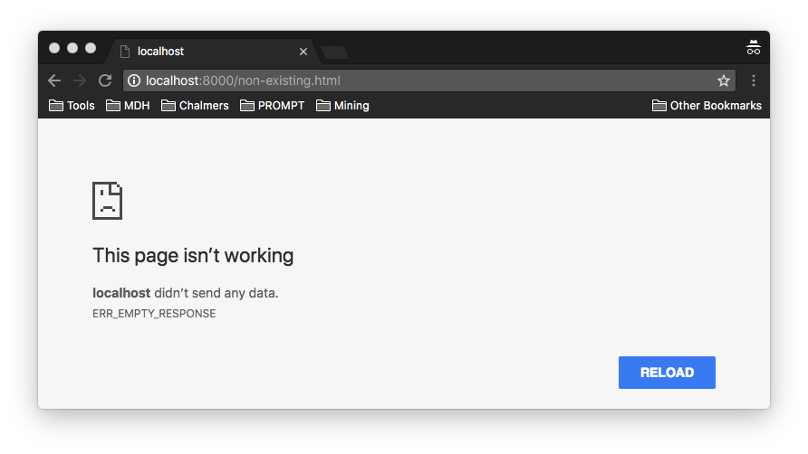

Denial of service is an attack intended to make a resource unavailable. There are several different ways a denial of service attack can be manifested, see, e.g., the OWASP Denial of Service page.
For such a simple application such as the web application developed in My first web application the number of possibilities of performing a denial of service attack is limited.
Your first task is to analyze your web application developed in My first web application for denial of service attacks, in particular w.r.t. server crashes. What happens if you try to access a nonexistent resource? Forgetting the verify that the file exists and replying with a 404 Not Found could lead to a server crash if you try to access a non-existing resource.
Trying to reload the page results in This site can't be reached, indicating that the server indeed crashed. Can you find any other ways of crashing your server?
Your second task is to remove all identified DOS vectors, e.g., by inserting appropriate checks. If there is a way to trigger an unhandled error the application is at risk. Program defensively!
Write a short attack report detailing the attack and your countermeasures.